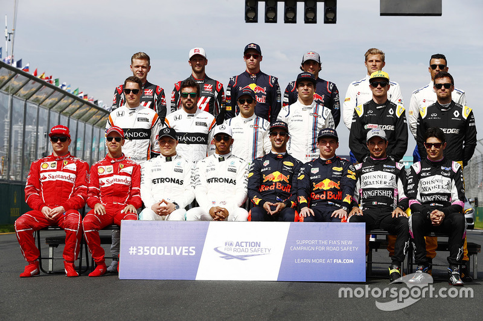

Escuderias y Pilotos

Notas
- Todas las escuderías llevan neumáticos Pirelli, que tiene firmado un contrato para suministrar neumáticos hasta la temporada 2019.
- Debido al fallecimiento de Jules Bianchi en 2015, el número 17 fue retirado en honor a él y no se utilizará más en Formula 1.